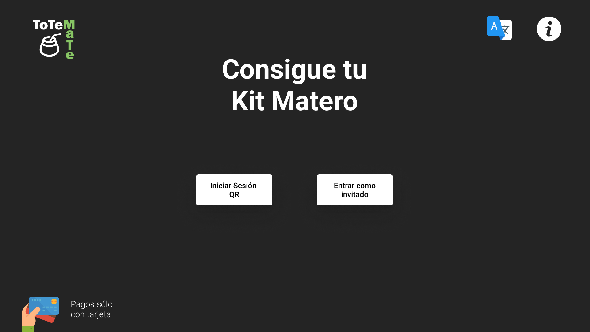
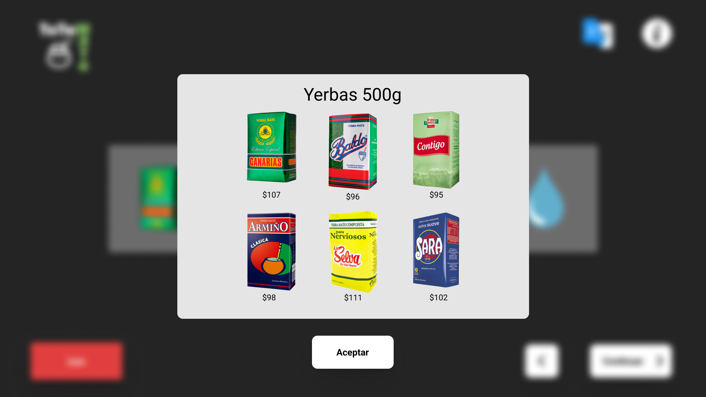
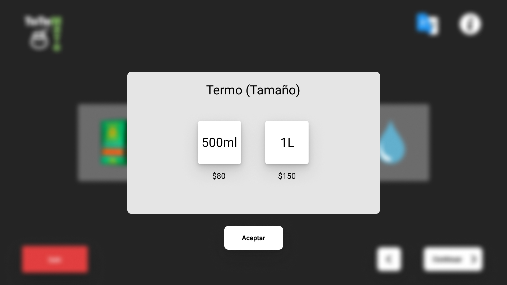
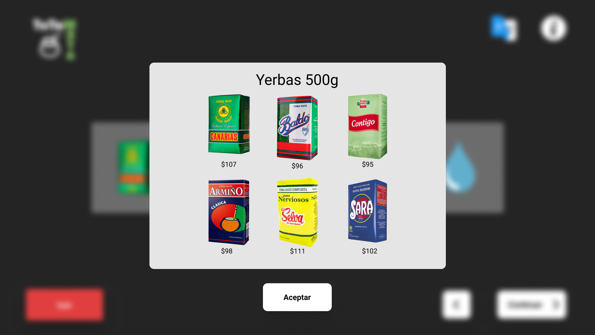
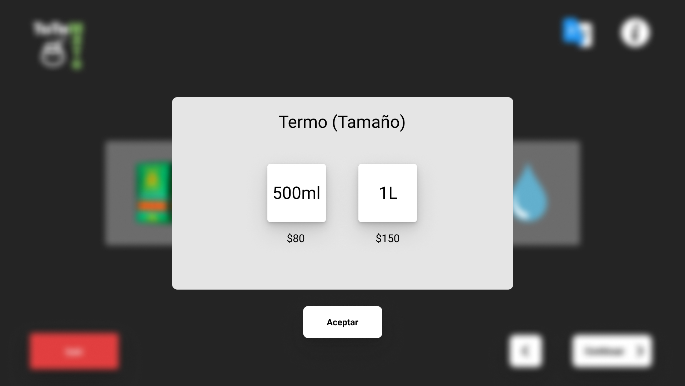
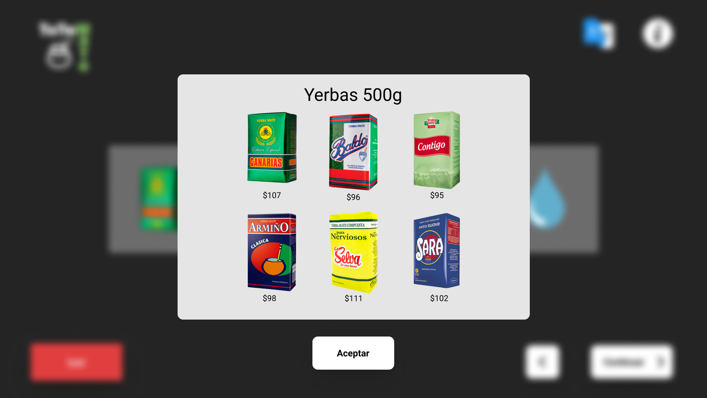
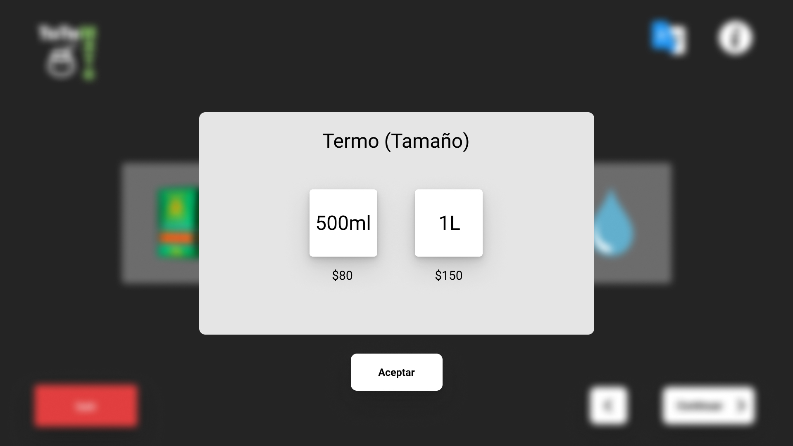
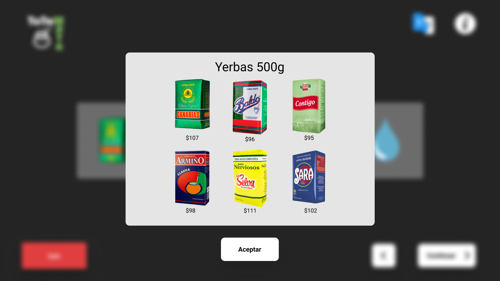
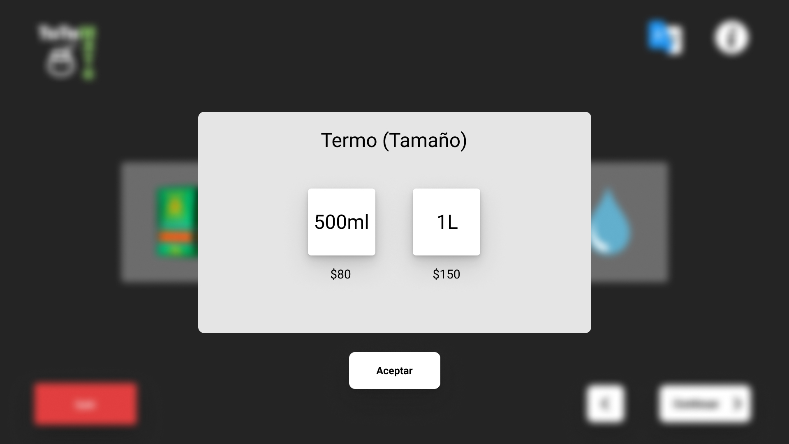

 





Es un totem que proporciona solución para las personas que se encuentran fuera de sus casas y frecuentan la necesidad de tomar mate. Tiene opciones de compra de kits materos a elección, predefinidos o simplemente se combinan a gusto, y de compra individual de cualquiera de los productos disponibles. Además se puede reponer únicamente agua.


Trabajo realizado junto a Diego Rivero y Nicolás Sarubbi
Figma
open_in_new